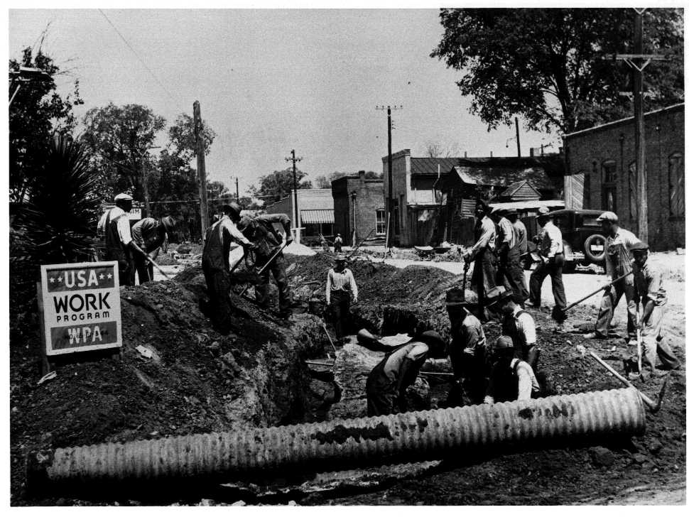
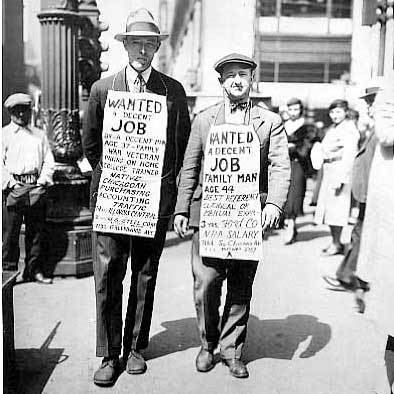

In 1932, when Roosevelt was elected President, the U.S. was longing for change.
The country had been devasted by the crash of the stock market, the dustbowl, the bank failures, and economic isolationism.
America needed a leader, a strong leader, and that’s exactly what it got.
Many have ranked Roosevelt’s presidency as one of the best in U.S. History.
Part of the reason behind that is the way he dealt with the depression.
Instead of sitting idly by waiting for the money to “trickle down”, he went and took action.
This action, was his “New Deal” program.
The main idea was to put Americans back to work through public spending.
Even though the New Deal did not pull America out of the depression, it did help to improve the situation.
Here are some of the effects of the “New Deal”.
A pin that was a part of Franklin Roosevelt’s “New Deal” campaign.
A couple of WPA workers at work in Tuskegee, Alabama
A pair of classy looking fellows trying to make ends meet during the great depression.